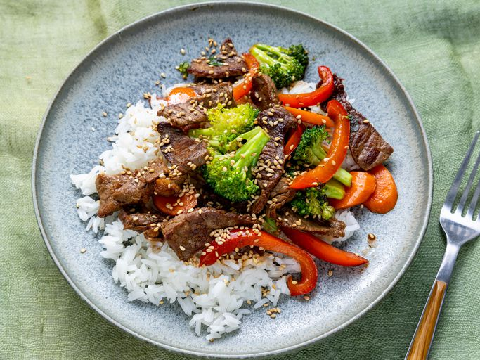

Quick Stir Fry Recipe

Main Page
Ingredients
- 2 tablespoons of vegetable oil
- 1 pound of beef sirloin,cut into 2-inch strips
- 1 1/2 cups fresh broccoli florets
- 1 red bell pepper,cut into matchsticks
- 2 carrots,thinly sliced
- 1 green onion,sliced
- 1 teaspoon minced garlic
- 2 tablespoons of soy sauce
- 2 tablespoons of sesame seeds,toasted
How to make stir fry step by step
Here's a very brief overview of what you can expect when you make homemade beef stir fry:
- Gather all Ingredients
- Heat vegetable oil in a large wok or skillet over medium-high heat;
add beef and stir fry until browned,3-4 minutes
- Move beef o the side of the wok and add broccoli, bell pepper, carrots, green onion,
and garlic to the center of the wok; stir-fry vegetables for 2 minutes.
- Stir beef into vegetables and season with soy sauce and sesame seeds.
Continue to cook and stir untikk vegetables are tender,about 2 more minutes
- And thats it! Serve hot and enjoy!